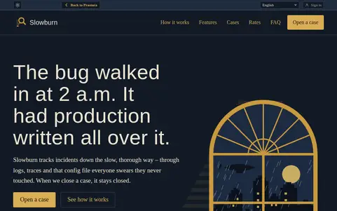
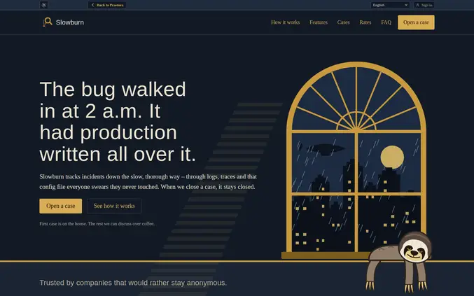
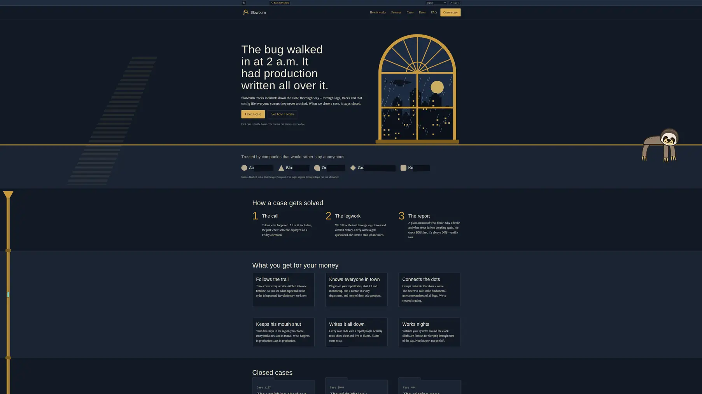
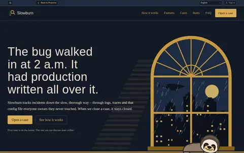
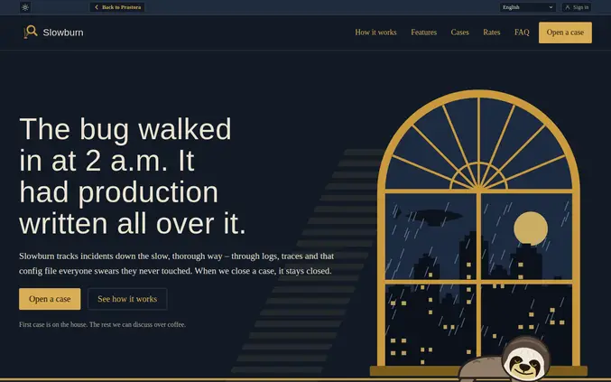
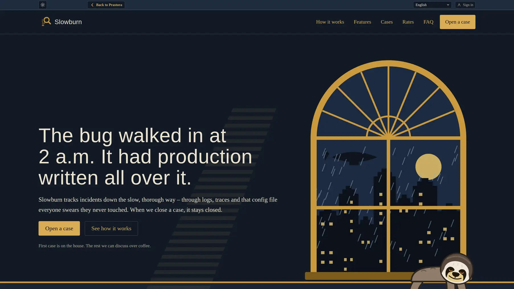

The long version
Why another CSS framework?
What websites actually need, why light sites keep winning, and what Prastora tries to fix without throwing away what already works.
Before writing a single line of Prastora, we asked ourselves whether the world needs another way to make websites. The shelves are hardly empty. You can install WordPress, pick one of several thousand themes and add a page builder that lets you drag boxes around until three in the morning. You can skip code entirely with Wix, Squarespace or Webflow, pay monthly and discover, if you ever try to leave, how attached they've become to your content. You can assemble pages from Bootstrap's ready-made blocks, or reach for React, Vue or Svelte inside a meta-framework that renders on the server, then on the client, then occasionally on both, just to be sure. Static site generators like Hugo and Eleventy sit in the corner doing their job well and getting invited to fewer parties. And the newest option is to describe the site to an AI and watch it appear, usually built on React and Tailwind, because that's what the AI saw most while it was learning.
Which raises some uncomfortable questions that still need answers. Why build yet another tool when the problem looks solved many times over? And why build it in plain HTML and CSS, when the centre of gravity in web development has been JavaScript for a decade? The answer starts not with code, but with the people who pay for websites and what they actually get for their money.
What owners get
A small business owner rarely wants a website as such. A dentist wants the phone to ring, a bakery wants its opening hours found on a phone in the rain, a law firm wants the right client to read the right page and fill in the form. Most of them have no wish to understand how any of it works, and that's fair: they don't want to understand fuel injection either, as long as the car goes. The trouble is that a site can look perfect on the owner's laptop and quietly fail everywhere else. If it takes six seconds to load on a mid-range phone over mobile data, half the visitors leave before the first heading appears. Six seconds is the mild version. Not long ago we came across commercial sites, built to sell goods and services, where the first uncached load took several minutes. Several minutes is long enough to find a competitor, order from them and get a delivery confirmation.
Several minutes is long enough to find a competitor, order from them and get a delivery confirmation.
What a visitor sees
Jabberwocky
’Twas brillig, and the slithy toves
Did gyre and gimble in the wabe:
All mimsy were the borogoves,
And the mome raths outgrabe.
What a crawler sees
<body>
<div id="app"></div>
<script src="app.js">
</script>
</body>Search robots are no more patient. Some sites are so loaded with JavaScript that a crawler arriving in a hurry finds an empty shell where the content should be. Google can come back later to render it, though “later” is doing a lot of work in that sentence, and many other crawlers, including most of the new ones gathering text for AI answers, don't come back at all. Meanwhile the CMS publishes the same article under its own address, its category, its tag, its archive month and a printer-friendly version, and the search engine is left to guess which one is real, because the canonical tag points to the wrong page or nowhere in particular.
Then there's the welcome committee. A cookie banner that covers half the screen and hides its “reject” option in grey on grey, a newsletter pop-up that fires before you've read a sentence, a chat bubble that waves at you, a request to allow notifications from a site you've known for four seconds, and an invitation to install the app. Some of these are close to impossible to dismiss on a phone, and every one of them brings its own script, so the visitor pays for the privilege of being interrupted in loading time as well as patience.
The last problem is the least visible. Often the only person who understands how a site is put together is the one who built it. The owner can't change a page without calling them, and changing developers means the new one looks inside, sighs, and quotes for a rebuild. None of this is the whole story of why a site brings no clients: content, offer and reputation matter more. But these are the parts that belong to whoever built the site, and they're exactly the parts the owner can't see.
Why light sites survive
A typical builder page
- Page builder
- Theme
- Plugins, a dozen or so
- Analytics, chat, pixels
- Web fonts
- Script libraries
- Your content
A hand-built page
- HTML
- CSS
- Your content
This is why lightweight sites, and even sites written entirely by hand, never really went out of fashion. A page of plain HTML and CSS has very little to go wrong. It arrives fast because it carries almost nothing, it's readable to any robot on the first visit because the content is right there in the markup, and it's hard to hack because there's nothing to break into: no database, no plugin from 2017 waiting for an update, no admin panel guarded by a password the owner's nephew chose. It can be hosted for free, moved anywhere in an afternoon and still opened in a browser twenty years from now. People who build such sites for small businesses for a living tend to say that the hardest part isn't the code, it's explaining to the client why any of this matters.
Here lies a paradox. The classic CSS frameworks were created precisely to make this kind of work easier, and they did: a whole generation learned layout from them. Yet many of the same craft-minded developers now describe them as an extra layer of dependencies and complexity. What went wrong?
Partly success. The older ones became so common that their sites can be recognised from across the room, and making one look like anything else means overriding defaults, then overriding the overrides, until the stylesheet is mostly an argument with itself. The newer approach avoided the arguments by having no opinions about appearance, and replaced them with markup buried under long strings of utility classes, a build step, a configuration file and, every few years, a migration guide.
Behind both lies the same pattern: a framework becomes universal by accumulation, adding a piece for every case it meets, and sooner or later you are maintaining the framework alongside your site. Fashion hasn't helped. It's now common to boast of having vibe-coded a whole site in an afternoon. The afternoon is fine. It's the following year, when someone has to change the menu inside a stack nobody chose, that tends to be less fun.
The afternoon is fine. It's the following year that tends to be less fun.
Fluid, and the alternative
Prastora started from a different question: why are layouts “fluid” in the first place? Open almost any site and change the zoom with the mouse wheel, and you'll see it. The page stretches and squeezes, columns grow and shrink, lines rewrap, blocks jump to new rows and drift relative to each other. That flexibility is the point of fluid layout, and also its hidden cost, because the visible area of a page can take an almost endless number of widths and heights across devices, browsers, sidebars and zoom levels, and each of them is, in theory, a state someone should check.
Prastora replaces that zoo with a few stable modes for classes of device: phone, desktop and large display, with a lighter variant for low windows such as a phone held sideways. Within each mode the page doesn't rearrange, it scales as a whole, like a vector image, keeping proportions and the position of every element relative to the others.
The practical result is that one checked width tells you how the rest of that class of screens will look. The visual result is that a small site can finally have a real composition, with artwork crossing from one section into the next and details lined up with the text, still lined up on a phone you've never seen. Template sites can't fake that.
A conventional fluid layout: fixed type size, centred 1200 px container



Prastora



Fewer taxes, same benefits
The rest of Prastora comes from refusing the usual taxes. There's no build step, because there's nothing to compile, and no runtime. JavaScript appears only where HTML and CSS have no answer, and the page keeps working when it doesn't load. Galleries, filters, price switches and form validation, which other tools hand to scripts, are made with native elements and modern selectors. The styles are split into layers, so a component can't overpower the core and a page can't quietly break a component, which ends most overriding wars before they start.
Each page links only the files it uses, so a portfolio doesn't download the styles of an online shop. And the files are meant to be read: each one starts with a short list of what's inside, so the next developer opens it and nods instead of sighing.
The ambition is to become universal by transformation rather than accumulation, with a small set of pieces that bend to different jobs. We'll find out how far that ambition stretches. So far it has survived a landing page, a shop, a checkout, a long read and a dashboard, which is more than most ambitions manage.
What frameworks do well is worth keeping, and Prastora tries to keep it or push it further. Speed of assembly comes from templates and components, the way experienced developers build a site in a day from a starter kit and a library of finished blocks. Consistency comes from design tokens: sizes, spacing and colours live in one place, so pages don't drift apart. Themes are just sets of values, so showing a client three colour schemes means three small files rather than three redesigns. And because everything is plain text organised in a predictable way, it turns out to suit AI assistants too. They can read it, change it and check their own changes, rather than producing another heap of classes that nobody will read again.
Where it's the wrong tool
There are cases where Prastora is the wrong choice. An application that lives on JavaScript wants a JavaScript framework. A team that already thinks in another vocabulary will find a new one a cost, not a gift. A client who wants to drag boxes around on a Sunday night will be happier with a page builder, at least until Monday. Prastora also makes a deliberate trade with browser zoom: rather than inviting visitors to wrestle the layout into a readable size, it aims to deliver a comfortable text size from the start, across combinations of devices, system settings and browsers, without extra controls. And it’s young. The ecosystem is small, the documentation is mostly this text, and the mascot is a sloth, which says something about our release schedule.
But if you build sites for people who need them to work rather than to be admired in a conference talk, and you'd like those sites to be fast, visible to robots, hard to break, easy to hand over and noticeably not from a template, Prastora might be the kind of reinvented wheel worth a test ride.
It doesn't go faster than the others. It just has fewer parts that fall off.